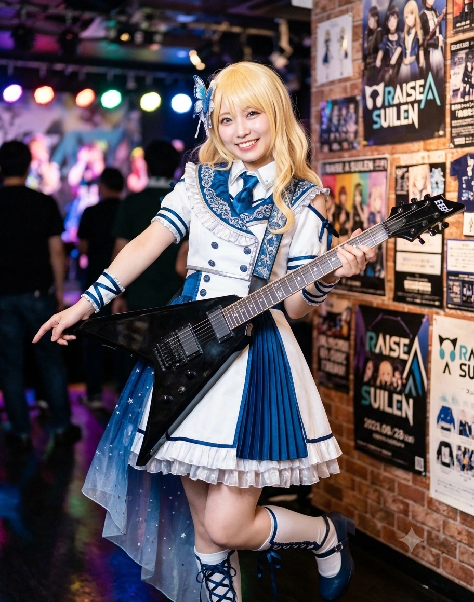

1. 개요
"고딩 때나 학부 때나 이론 공부는 정말 거북했지만...... 뭐, 뭐어, 복식 디자인 실기 만점으로 '전화찬스' 막차 타고 입학해서 이제 무사히 졸업도 했으니 그런 건 미크론 미크론(ミクロンミクロン)! 기타와 의상, 그리고 동곡동·투자동의 분위기를 띄우는 건 이 기유호 사장님에게 맡겨 두라구~ 레알 쩌는 옷 만들어 줄게!"
(조류희: "기유호 씨. 새벽 5시에 일어났으면서 SNS 관리하느라 또 본사 임원 회의 시간에 지각하셨군요. 그리고 대입 마감 10분 전에 5차 추가합격 전화찬스로 겨우 문 닫고 들어간 흑역사는 미크론 단위로도 지워지지 않습니다만?")
효빈광역시 최고의 부촌인 창전구 내에서도 1인당 의류 소비 지출액 전국 1위를 찍는 패션과 부(富)의 메카 동곡동(桐谷洞)·투자동(透子洞)의 상징이자, 효빈시 대표 패션 기업 『(주)토에크(TOEK)』 대표이사의 외동딸. 2003년생 여성으로 고교 시절 처참한 암기 과목 내신에도 불구하고 오직 '복식·미술 디자인 실기' 특정 과목의 초월적인 만점 하드캐리와 대입 마감 10분 전 기적의 '전화찬스(최종 추가합격 막차)'로 효빈대학교 생활과학대학 의류산업학과(22학번)에 턱걸이 합격하여 2026년 2월 현역으로 졸업했다. 현재는 대학생 시절 런칭한 연 매출 수십억 원대의 하이엔드 스트릿 브랜드 『TOEK-U』를 전업으로 이끄는 대표이사 사장(CEO 겸 수석 디자이너)이자 모기업 『(주)토에크』의 영캐주얼 사업부 총괄 상무이사로 재직 중이며, 동시에 5인조 심포닉 걸즈 록 밴드 『모르포니카(Morfonica 효빈)』의 기타리스트 겸 무대 의상 총괄을 맡고 있다.
본인의 성명은 한국의 정통 희귀 성씨인 '기(奇, 기이할 기)' 씨에 '넉넉할 유(裕)', '하늘 호(昊)' 자를 쓰는 기유호(奇裕昊)다. 그런데 이름의 어감('기유호' ↔ '키리가야 토우코')이 묘하게 맞닿아 있을 뿐만 아니라, 그녀가 태어난 고향인 동곡동(桐谷洞)의 한자 '동곡(桐谷)'은 《BanG Dream!》 Morfonica의 기타리스트 키리가야 토우코(桐ヶ谷 透子)의 성씨 '키리가야(桐ヶ谷)'와 일치하고, 현재 거주지이자 본사 사옥이 있는 투자동(透子洞)의 한자 '투자(透子)'는 토우코의 이름 '토우코(透子)'와 100% 똑같다![6]심지어 어머니가 운영하는 패션 모기업의 사명인 『토에크(TOEK)』 역시 토우코의 인플루언서 활동명인 'TOKO'의 철자를 변형한 것이다! 생년월일 또한 애니메이션 설정상 토우코와 동일한 2003년 12월 16일생(사수자리)이며, 164cm의 화려한 금발 웨이브 장발 외모와 반깐 앞머리, 날카롭지만 웃는 상인 갈색 눈매, 입만 열면 "미크론 미크론~!", "레알 쩌네~!", "잇쇼쟝(완전 똑같잖아)~!"을 연발하는 인싸 갸루(Gal) 성격까지 완벽하게 일치해 자타공인 '키리가야 토우코의 현실 도플갱어'로 통한다.
게다가 껄렁해 보이는 화려한 갸루 겉모습과 달리, 100년 전통 포목점 종가 할머니의 엄격한 훈육을 받고 자라 예의범절이 뼛속까지 바르고 친구의 실수를 먼저 감싸 안는 '갸루를 빙자한 성인군자 대인배'라는 엄청난 갭 모에까지 원작 토우코와 100% 판박이다.
2. 생애 및 커리어 (동곡동과 투자동을 지배하는 영 앤 리치 갸루)
2.1. 100년 포목점 『기씨네 비단방』의 손녀와 홍콩·싱가포르 유아기 ("영어? 사투리랑 등가교환했어!")
2003년 12월 16일, 효빈광역시 창전구 동곡동에서 전통 한복·기모노 고급 견직물 포목점으로 출발해 대형 패션 그룹으로 성장한 『(주)토에크 그룹』 가문의 외동딸로 태어났다. 이주시(쌍엽동 쌍엽푸드 회장 딸), 조류희(팔조동 대형 로펌·금융가 딸)와 함께 '창전구 3대 쌉부자(초특급 금수저 영 앤 리치)'로 불린다.
성우 스구타 히나의 실제 이력과 똑같이, 유호는 초등학교에 입학하기 전인 유아기 시절 글로벌 섬유 무역을 총괄하던 아버지 기성준 부회장을 따라 홍콩과 싱가포르에서 4년간 거주했던 귀국자녀다! 유치원 시절에는 유창한 영어를 구사했으나, 8살 때 귀국해 동곡초등학교에 입학한 뒤 친할머니 박정란 회장님의 구수한 덕빈도 사투리와 동곡동 인싸 갸루 유행어에 심취하는 바람에 머릿속의 영어 회화 능력을 사투리 및 갸루어('레알', '미크론', '~쟝')와 완벽하게 등가교환(?)해 까먹어버렸다(...)는 웃픈 비화가 있다.
할머니 박정란 회장은 손녀를 끔찍이 아끼면서도 명문가의 예절 교육만큼은 호랑이처럼 엄격하게 시켰다. 유호가 어릴 적에는 불량배들이나 유혹이 많은 야간 지역 축제 노점에도 못 가게 막았을 정도였는데, 이 엄격한 가풍 덕분에 유호는 화려한 갸루 화장을 하고도 어른들 앞에서는 가장 먼저 무릎을 꿇고 두 손으로 차를 올리는 기품 있는 아가씨로 자라났다.
2.2. 새벽 5시 기상 가풍인데 왜 매일 지각인가? (창전구 소재 『월삼여고』 진학과 SNS·컵 야키소바의 마성)
동곡중학교를 졸업한 유호는 효빈광역시 창전구 내에 위치한 명문 사립 여고인 월삼여자고등학교(月森女子高等學校 / 츠키노모리 여학원 포지션)로 진학했다.
[지리 및 학군 고증 주의: 빈주시 장기구 월삼동(月三洞)과는 전혀 다른 곳에 위치한 창전구 명문 여고!]
간혹 타 지역 사람들이 '월삼여자고등학교'라는 교명만 보고 덕빈북도 빈주시 장기구에 있는 '월삼동(月三洞)'에 위치한 학교이거나 옆 동네 학교라고 착각하곤 하지만, 실제로 빈주시 장기구 월삼동과 효빈광역시 남동부 창전구는 물리적 거리가 상당히 먼 전혀 다른 권역이다! 유호와 모르포니카 멤버들이 다닌 『월삼여자고등학교(月森女高)』는 옛 학원 창립자가 '달빛 비치는 푸른 숲(月森, 츠키노모리)'이라는 아호에서 따와 지은 교명으로, 빈주시 월삼동(月三洞)과는 한글 표기만 우연히 같을 뿐 지리적으로는 100% 효빈시 창전구 학군 내에 자리 잡고 있다. 또한 특목고나 자사고가 아닌 창전구 학군 소속 '고교 평준화 일반계 고등학교'였기 때문에, 투자동 펜트하우스에 사는 초특급 금수저 기유호와 칠심3동 다세대 빌라에 살던 저소득층 소녀 마서령·심나나가 같은 학교에서 운명처럼 만날 수 있었다.
월삼여고에 진학한 유호에게는 전교생이 미스터리로 여기는 모순적인 생활 패턴이 있었다. 분명 유호는 종갓집 가풍 때문에 365일 단 하루도 빠짐없이 새벽 5시 정각에 눈을 뜨는 초특급 아침형 인간인데, 정작 오전 8시 30분까지인 학교 등교 시간(그리고 졸업 후 토에크 본사 출근 시간)에는 매번 문이 닫히기 1초 전에 세이프하거나 아슬아슬하게 지각을 하는 것이었다!
나중에 밝혀진 지각의 원인은 너무나도 유호다웠다. 새벽 5시에 상쾌하게 일어나 할머니 방 화로 앞에서 아침 문안을 드린 뒤, 자기 방에 들어와 오전 5시 30분부터 8시까지 무려 2시간 반 동안 인스타그램·틱톡·스레드(SNS)에 오늘 입을 코디 사진을 올리고 수만 명의 팔로워 댓글에 일일이 답글을 달아주며 타임라인을 구경하다가 등교·출근 시간을 놓쳐버리는 것이었다![7]결국 고교 시절 매일 아침 8시 15분에 집을 튀어나와 자신의 주 종목인 육상부 500m 달리기 챔프의 각력으로 투자동에서 창전구 내 월삼여고까지 시속 25km로 전력 질주해 등교하는 것이 일상이 되었다.
또한 수백억 자산가의 딸이자 현직 패션 브랜드 CEO로 매끼 호텔 셰프의 요리를 먹을 수 있음에도, 정작 본인이 세상에서 제일 환장하는 소울 푸드는 편의점에서 파는 인스턴트 '컵 야키소바(페양구·UFO 등 볶음컵라면)'와 '딸기', 그리고 심나나 못지않은 '매운 음식'이다. 반면 민트 계열의 껌이나 치약 맛 음식, 그리고 성우 스구타 히나 본체와 똑같이 '양고기(징기스칸 요리 등)'는 특유의 냄새 때문에 절대 먹지 못한다.
2.3. 월삼여고의 카리스마 인싸와 『모르포니카』 결성 (갸루를 빙자한 대인배 성인군자)
월삼여고 입학 당시 이미 패션 잡지 칼럼니스트 겸 50만 인플루언서 'TOKO(유호)'로 유명했던 그녀는 교내외를 막론하고 사람이 구름처럼 모여드는 '월삼여고의 카리스마'였다. 원래는 무엇을 시작해도 금방 질려 오래가지 못하는 성격이었으나, 고1 때 고교 평준화로 입학해 겉돌고 있던 마서령(마시로), 반장 이주시(츠쿠시)와 함께 『RiNG 효빈점』에서 5밴드 합동 라이브를 본 뒤 록 밴드의 매력에 푹 빠져 『모르포니카』를 결성했다.[8]유호가 처음 통기타를 잡게 된 계기는 성우 스구타 히나와 똑같이 중·고교 시절 싱어송라이터 YUI의 노래에 반해 용돈을 모아 어쿠스틱 기타를 사서 방과 후 혼자 연습했던 것이 시초였다. 이후 밴드를 결성하며 강렬한 붉은색 V자형 메탈 기타인 ESP Arrow FR TOKO로 무기를 바꿨다.
유호의 진가가 가장 빛난 순간은 초기 라이브 실패 직후였다. 당시 악플에 멘탈이 붕괴된 마서령이 "다 유호 쨩이랑 주시 쨩이 멋대로 라이브 나가자고 해서 내가 망신당한 거잖아!!"라며 적반하장으로 남탓을 퍼부었을 때, 보통의 자존심 센 부잣집 아가씨였다면 절교를 선언하고도 남았을 상황이었다. 그러나 기유호는 화를 내기는커녕 "어라, 저 녀석 왜 저래?"라며 쿨하게 넘긴 뒤, 오히려 서령이에게 먼저 다가가 "시로야, 내가 너의 부담감을 미리 눈치채지 못하고 무리하게 끌고 가서 미안해. 우리 다시 천천히 네 페이스대로 해보자!"라며 사과하고 손을 내밀었다. 이 사건으로 기유호는 효빈시 서브컬처 팬덤에서 '빛유호', '갸루의 탈을 쓴 보살'이라는 영구 칭호를 얻었다.
2.4. 특정 과목(실기) 원툴과 '마감 10분 전 전화찬스(추합 막차)'로 기적 입학한 효빈대 의류산업학과! (졸업 후 『TOEK-U』 대표 CEO 등극)
원작 애니메이션과 게임에서도 키리가야 토우코가 쿠라타 마시로와 함께 츠키노모리 여학원의 대표 낙제생(바보 콤비)으로 묘사되듯, 현실의 기유호 역시 다른 네 명의 멤버들(전교 수석 조류희, 수능 만점급 심나나, 상위권 우등생 이주시, 독하게 노력해 장학생이 된 마서령)과 달리 책상에 앉아 글자를 외우는 일반 학업 성적은 가히 처참한 수준이었다(...).
고등학교 3년 내내 "영어랑 수학 공식은 정말 거북해~ 미크론 미크론!"이라며 매 시험마다 과락(낙제점) 위기에 몰렸는데, 단짝 이주시가 도와주겠다고 나서면 "후스케(주시)한테 배우면 설명이 장황해서 더 헷갈려!"라며 거절하고, 결국 전교 1등 학생회장인 조류희(루이) 앞에 무릎을 꿇고 스파르타 족집게 과외를 받은 끝에 겨우 유급만 면할 정도의 턱걸이 내신 점수를 받았다. 이 때문에 고3 수시 원서 접수 기간에 담임교사조차 "유호야, 이 국·영·수 내신 등급으로는 마서령이나 심나나, 이주시, 조류희가 지원하는 국립 명문 효빈대학교는 일반 전형으론 택도 없다..."라며 고개를 저었다.
그러나 하늘이 무너져도 솟아날 구멍이 있었으니, 유호에게는 타의 추종을 불허하는 '특정 과목(미술·복식 디자인 실기 및 가정·의류 제작 실습)의 기형적인 초특급 만점 스펙'이 있었다! 수학 시험지는 백지로 내도, 원단 재단과 입체 패턴 드레이핑(Draping), 색채 디자인 실기 과목에서만큼은 심사위원 교수들이 "이건 고교생 수준이 아니라 당장 파리 컬렉션에 내놔도 될 천재적인 감각이다!"라고 혀를 내두를 정도로 3년 내내 단독 전교 1등(실기 만점) 및 전국 고교 패션 디자인 공모전 대상을 휩쓸었던 것이다![12]국·영·수 등 암기 과목 성적은 처참했으나 오직 '미술·복식 디자인 실기'와 '가정·의류 제작 실습' 특정 과목에서만 압도적인 전교 1등 만점을 찍어 특기자 전형 지원 자격을 채웠고, 최초 불합격(예비 18번) 후 등록 마감 10분 전에 걸려 온 '최종 5차 추가합격 전화찬스(문 닫고 막차 탑승!)'로 기적처럼 겨우 입학했다(...).
[2022학년도 대입, 효빈대 의류산업학과 '마감 10분 전 전화찬스(추가합격 막차)' 생존 실화!]
유호는 내신 반영 비율이 가장 낮고 특정 전공교과 및 실기 포트폴리오 반영 비율이 80%에 달하는 효빈대학교 생활과학대학 의류산업학과 『창의패션실기 특기자 전형』에 마지막 희망을 걸고 원서를 넣었다. 실기 고사 당일 유호는 역대 최고점인 100점 만점을 찍었으나... 불행히도 나머지 20%로 반영된 국·영·수 내신이 워낙 깎아먹은 탓에, 12월 최초 합격자 발표 날 화면에는 [불합격 (예비 순위 18번)]이라는 절망적인 글자가 떴다!
이미 수석·장학생으로 최초 합격증을 받아든 조류희, 심나나, 이주시, 마서령 네 사람이 투자동 유호네 펜트하우스에 모여 유호의 눈치를 보며 초조하게 1차, 2차, 3차 추가합격 발표를 기다렸으나 예비 번호는 1번에서 멈춰버렸다.
그렇게 대입 최종 등록 마감일인 12월 27일 밤 8시 50분(최종 마감 딱 10분 전!). 유호가 컵 야키소바를 부둥켜안고 "으아앙... 나 혼자만 재수생(또는 타 대학)이 되어서 너희들이랑 같은 캠퍼스 못 다니게 생겼어... 내 청춘이 미크론으로 부서졌어어어 ㅠㅠ"라며 눈물 콧물을 쏟던 바로 그 순간! 유호의 최신형 스마트폰에서 [079-270-XXXX (효빈대학교 입학처)]라는 발신 번호와 함께 벨소리가 울렸다!!
기유호: (눈물범벅이 된 채 빛의 속도로 통화 버튼을 누르며) "여, 여보세요오오?! 네!! 저 기유호인데요오오!!"
효빈대 입학처 직원: "기유호 수험생 본인 맞으시죠? 방금 앞 순위 합격자분이 서울 소재 대학으로 등록을 포기하셔서, 의류산업학과 최종 5차 추가합격 마지막 결원 1자리 대상자가 되셨습니다. 등록 의사 있으십니까?"
기유호: (펜트하우스 천장이 떠나가라 괴성을 지르며) "네에에에에ㅡ!! 등록할게요!! 저 무조건 다닐게요!! 아빠 엄마 할머니!! 나 효빈대 전화찬스로 문 닫고 붙었어어어!! 레알 기적이쟝ㅡ!!"
조류희: (옆에서 스톱워치를 끄며 한숨을 내쉬고) "...마감 9분 42초 전 최종 5차 추가합격이라니. 확률론적으로 아슬아슬하기 짝이 없군요. 어쨌든 축하드립니다, 기유호 씨. 입학 후 전공 이론 과락은 제가 책임지고 막아드리죠."
그렇게 드라마보다 더 극적인 '마감 10분 전 전화찬스(문 닫고 입학)'로 모니카 5인방 전원 효빈대 22학번 동문 타이틀을 지켜낸 유호는, 대학 입학 후에도 교양 이론 수업은 조류희와 심나나의 족집게 요약 노트로 간신히 C+~B0 학점을 방어하는 대신, 전공인 복식 제작 실습과 패션 마케팅 과목에서는 전부 A+를 쓸어 담았다.
학부 재학 시절 어머니의 회사인 『(주)토에크』 산하에 자신의 독립 영캐주얼 사업부이자 자체 브랜드인 『TOEK-U (토에크-유)』를 런칭했던 유호는, 휴학 없이 4년간 학업과 사업을 병행한 끝에 2026년 2월 효빈대학교 의류산업학과를 당당히 졸업(졸업 패션쇼 실기 부문만은 단과대 최우수 작품상 수상!)했다! 2026년 현재는 어엿한 전업 경영인 겸 수석 디자이너로서 『TOEK-U』의 정식 대표이사 사장(CEO)에 취임함과 동시에, 모기업 『(주)토에크(TOEK)』의 최연소 영캐주얼 사업부 총괄 상무이사로 승진하여 투자동 본사 사옥 타워로 매일 출근하고 있다. 특히 함께 졸업하고 『(주)토에크』 수석 콜라보 아트 디렉터로 합류한 단짝 심나나(나나미)의 천재적 유화·팝아트 일러스트를 의류에 접목한 시그니처 라인업을 총괄하고, 효빈대 사회복지관 사회복지사로 취업한 마서령의 출근룩 코디와 복지관 취약계층 청소년 의류 후원 사업까지 통 크게 책임지며 창전구 패션 거리의 살아있는 여왕으로 군림하고 있다.
3. 비주얼 및 캐릭터성 (164cm 런웨이 모델 피지컬 & 500m 육상 여제)
3.1. 오다혜와 쌍벽을 이루는 164cm·B86(D컵)의 화려한 글래머 갸루
허리까지 내려오는 풍성하고 화려한 금발 웨이브 장발에 이마를 시원하게 드러낸 반깐 앞머리, 웃을 때마다 반달처럼 휘어지는 뾰족하고 매력적인 갈색 눈매를 지녔다. 고교·대학 시절부터 기본 베이스 메이크업과 립글로스를 완벽하게 세팅했으며, 어엿한 패션 기업 대표가 된 현재도 오피스룩 대신 본인이 직접 디자인한 트렌디한 오프숄더 재킷과 하이엔드 스트릿 룩, 그리고 무대 위에서의 화려한 파란 나비 심포닉 제복을 찰떡같이 소화한다.
신장은 164cm로, 『포핀☆스타』의 리드 기타리스트 오다혜(하나조노 타에 본체)와 1mm의 오차도 없이 똑같은 장신(효빈시 기타리스트 중 최장신 라인)이다! 게다가 육상부 중거리(500m) 에이스로 다져진 탄탄한 허벅지와 11자 복근에, B86(꽉 찬 D컵)-W57-H87이라는 서구적이고 볼륨감 넘치는 하이틴 갸루 모델 체형까지 겸비하고 있다.[9]이 때문에 150cm 단신에 빈유인 리더 이주시(츠쿠시)를 볼 때마다 유호가 "오구오구~ 우리 후스케(주시), 쌍엽푸드 본부장님 달고도 도토리 키 재기 하는 햄스터 같아서 레알 귀엽네~ 야채 많이 먹고 나처럼 좀 커라!"라며 위에서 내려다보며 놀려먹어 주시의 발작 버튼을 누른다.
3.2. "미크론 미크론!", "~쟝(じゃん)" 말버릇과 숨겨진 보육교사(아기 돌보기) 만렙 본능
사소한 문제나 복잡한 걱정은 "그런 건 미크론 미크론(100만분의 1미터처럼 작고 사소하다는 뜻의 유호표 유행어)!"이라며 쿨하게 날려버리고, 말끝마다 성우 스구타 히나 특유의 찰진 갸루 억양인 "~쟝(じゃん / ~잖아, 맞잖아)!"을 붙인다.
[성우 본체 기믹 역수입: 유아 및 아기 돌보기 만렙 보육 천사!]
화려한 손톱 네일아트를 한 금발 갸루 사장님이라 아이들을 대하는 데 서툴 것 같지만, 놀랍게도 담당 성우 스구타 히나가 성우 데뷔 전 실제 어린이집 보육교사로 근무하며 아기 돌보기를 세상에서 제일 좋아했던 본체 속성을 그대로 물려받았다! 이주시의 어린 여동생들이나 동곡동 패션쇼에 찾아온 미아 아기들, 혹은 마서령이 근무하는 효빈대 사회복지관의 영유아 돌봄 교실 아이들이 울고 있으면, 유호가 1초 만에 달려가 전문 보육교사 뺨치는 능숙한 자세로 아기를 안아 어르고 자장가를 불러주며 기저귀까지 갈아주는 초특급 모성애 반전 매력을 선보인다. 본사 사장실 컴퓨터로 보는 유튜브 알고리즘의 절반이 패션 런웨이 영상이고 나머지 절반이 '아기 육아 브이로그'와 '요리 ASMR(정작 본인은 요리 못 함)'일 정도다.
4. 정치 성향: '창전 리버럴'의 선봉장과 2017년 윤대환 플래시 참교육
4.1. "폭력과 구태 보수는 전혀 트렌디(Trendy)하지 않아! 언팔로우야~👋"
"당원 가입 원서 쓰기? 아~ 그런 복잡한 서류 작업은 딱 질색, 미크론 미크론이라 난 쿨하게 무소속이야! 하지만 국민의힘 아저씨들처럼 아직도 여자애들 옷차림이나 만화 캐릭터 가지고 꼰대질하는 구석기 시대 감성은 하나도 안 힙(Hip)하잖아?! 우리 동곡동·투자동에서는 그런 구닥다리 혐오 정치인들은 영구 언팔로우(차단)고, 트렌디하고 반짝이는 박효빈 시장님이랑 파란색(더불어민주당)에 무조건 '좋아요 & 투표' 누른다구~👋"
기유호는 기업 경영인 신분인 데다 본인이 서류 작성 같은 복잡한 절차를 질색하는 탓에 공식적인 정당 당적은 없는 무소속이다. 그러나 정치적 성향에 있어서는 창전구의 부유층 청년 세대 및 젊은 여성 기업인을 상징하는 '창전 리버럴(Changjeon Liberal)'의 핵심 아이콘으로서 더불어민주당과 박효빈 시장을 누구보다 열렬히 지지한다. 그녀에게 정치는 무거운 이념이 아니라 '트렌드(Trend)와 품격, 그리고 문화적 자유'의 문제다. 다양성과 서브컬처, 크리에이터들의 자유로운 패션을 존중하는 박효빈 시장과 민주당은 '힙하고 멋진 우리 편'인 반면, 권위주의와 남혐·여혐 갈라치기, 서브컬처 탄압에 찌든 보수 정당(국민의힘)은 '상종 못 할 촌스러운 꼰대 집단'인 것이다.
[전설의 2017년 3호선 투자(透子)역 윤대환 '스마트폰 LED 플래시' 참교육 사건!]
유호가 동곡중학교 2학년(만 14세)이던 2017년 가을, 토우코(透子)의 이름 한자와 똑같은 3호선 투자역(透子驛) 앞 '투자동 패션 거리'에서 친구들 및 인플루언서 언니들과 함께 스마트폰으로 룩북 셀카를 찍고 있을 때였다. 그때 출소 후 창전구를 배회하던 전직 시장 윤대환이 나타나 "어린 계집애들이 대낮부터 천박하게 화장하고 폰질이나 해대니 나라가 망한다!"며 유호의 스마트폰을 빼앗으려 손을 치켜들었다.
그러나 겁 없는 갸루 중학생 기유호는 도망가기는커녕, 그 자리에 모인 50여 명의 패션 피플과 토우코 팬들을 향해 카리스마 넘치는 목소리로 외쳤다!
"얘들아!! 저 어두컴컴한 구시대 아저씨한테 우리 투자(透子)동의 반짝반짝한 최신 유행 조명을 맛보여 주자!! 전원 스마트폰 카메라 LED 플래시 최대 밝기 ON, 발사아아ㅡ!!"
유호의 구령과 함께 수십 대의 최신형 스마트폰 고출력 LED 플래시와 휴대용 링라이트 조명이 윤대환의 동공에 일제히 정조준되었다! 갑작스러운 태양권급 광량에 시야를 상실한 윤대환이 "으아악 내 눈!!"이라며 비틀거리자, 육상부 에이스 유호가 재빠르게 다리를 걸어 넘어뜨리고 출동한 경찰에게 현행범으로 인계해 버렸다. 이 통쾌한 사건이 알려지자 키리가야 토우코의 성우 스구타 히나가 직접 트위터에 "에에?! 한국의 '투자(透子)역'에서 난동 부리던 아저씨를 플래시로 물리쳤다고요? 역시 토우코 짱의 팬들은 반짝반짝한 걸 무기로 쓸 줄 아네요! ✨ 폭력은 전혀 유행하지 않아요! 아저씨, 언팔로우 당하셨네요~ 👋📱"라고 글을 남겨 전 세계적인 화제가 되었다.
4.2. 소속 정당 및 지지 성향
| 기간 | 소속 정당 | 비고 |
| 현재 | 무소속 | 정당 미가입 (단, '창전 리버럴'의 선봉장으로서 더불어민주당 및 박효빈 시장 열렬 지지 / 시청 청년패션산업 자문위원) |
5. 효빈시판 Morfonica 멤버들과의 관계 및 4대 일화
5.1. 멤버별 상세 관계
- 조류희 (潮瑠希 / 야시오 루이 포지션, 2003년생) - 만나기만 하면 으르렁대는 '상극의 앙숙'이자 날 전화찬스로 대학에 보내준 생명의 은인:
유호의 최대 천적이자 메이저 커플링 파트너(통칭 토우루이). 감성과 유행, 적당주의를 추구하는 인싸 디자이너 유호와 철저한 계산, 효율, 완벽주의를 추구하는 수리과학·음향학 석박사 연구원 조류희는 물과 기름처럼 사사건건 부딪힌다. 유호가 라이브 관객을 보고 "와아! 1억 명은 모인 것 같아!"라고 호들갑을 떨면 류희가 0.1초 만에 "그럴 리가 없잖아요. 효빈시 인구가 몇 명인데"라고 초를 치고, 유호가 고2 때 반장이 되었다고 류희에게 자랑하러 갔다가 류희가 전교 학생회장이 된 것을 알고 데꿀멍하는 식이다.[10]학부 시절 효빈대 에브리타임에서는 이 두 사람이 복도에서 투닥거리는 모습을 보고 "모르포니카에서 쟤네 둘만 백합 만화 『시트러스(citrus)』 찍는다"며 열광했다.
하지만 류희의 가차 없는 독설에 오기가 생긴 유호가 밤새 피나는 연습을 해 류희의 5현 바이올린 솔로 파트를 기타로 완벽히 소화해 내며 실력을 끌어올렸고, 고3 때 유호가 최저 내신이라도 맞춰서 효빈대 의류산업학과 5차 추합 전화찬스 막차를 탈 수 있게 스파르타 과외를 해주고 대학 4년 내내 교양 이론 과락을 막아주어 무사히 졸업하게 해준 것도 결국 류희이기에 서로가 서로에게 없어서는 안 될 애증의 단짝이다.
- 심나나 (深羅奈 / 히로마치 나나미 포지션, 2003년생) - 내 브랜드 『TOEK-U』를 대박 낸 천재 아트 파트너:
유호가 "나나미(나나)~"라고 부르며 가장 코드가 잘 맞는 친구이자 비즈니스 파트너(통칭 토우나나). 나나가 족포초 트라우마로 숨겨왔던 천재적 미술 실력을 유호가 편견 없이 긍정하고 패션계로 끌어내 주어 현재 『(주)토에크』 수석 콜라보 아트 디렉터로 영입했으며, 나나는 유호가 어려운 기타 프레이즈로 고전할 때마다 한 번 듣고 악보를 완벽하게 채보해 주고 할로윈 의상 콜라보를 함께 만드는 최고의 소울메이트다.
- 마서령 (馬瑞領 / 쿠라타 마시로 포지션, 2003년생, 154cm) - 내가 평생 기 살려주고 옷 입혀줘야 하는 귀여운 보컬 아기 새(현 사회복지사 선생님):
유호는 서령이를 "시로(シロ)~"라는 애칭으로 부른다. 처음엔 소심하고 부정적인 서령이와 템포가 안 맞았으나, 서령이가 보컬 조 모임에서 기가 죽어 도망쳐 나왔을 때 "남탓하고 피하기만 하는 사람을 누가 친구로 받아주겠어? ...아, 말이 너무 심했나? 그냥 네 페이스대로 천천히 해, 내가 옆에 있잖아!"라며 당근과 채찍으로 서령이의 멘탈을 잡아준 든든한 언니 같은 친구다. 2026년 서령이가 효빈대학교 사회복지관 사회복지사 겸 사례관리상담사로 첫 출근할 때도 유호가 밤새워 154cm인 서령이의 체형에 딱 맞춘 세상에서 제일 단정하고 예쁜 연남색(#6677CC) 비스포크 카디건 정장을 만들어 선물했다.
- 이주시 (二珠詩 / 후타바 츠쿠시 포지션, 2003년생, 150cm) - 놀리는 재미가 우주 레벨인 우리의 쪼꼬미 반장 '후스케':
유호가 "후-스케(ふーすけ / 주스케)"라는 장난스러운 별명으로 부르는 단짝(통칭 토우츠쿠). 주시가 대학 졸업 후 『쌍엽푸드』 신사업본부장 명함을 파고 어른스러운 척 폼을 잡을 때마다, 유호가 164cm의 큰 키로 주시(150cm)의 정수리에 턱을 얹으며 "오구오구~ 우리 후스케는 본부장님 돼서도 볼살에 해바라기씨 숨겨둔 햄스터 같아서 레알 귀엽단 말이지~!"라고 놀려 주시를 팔짝 뛰게 만든다. 그러면서도 신곡 특훈 때는 아침 6시부터 함께 나와 연습해 준 고마운 리더다.
5.2. 효빈시판 모르포니카 5인방 핵심 일화 (각 30줄 이상 4대 사건)
- 모니카 일화 1: 폭염 속의 '녹아버린 새알심 단팥죽' 대참사와 조류희의 스파르타 감사원(?) 악보 사건 (feat. 조류희)
무더운 8월 한여름, 창전구 합주실에서 신곡 연습을 하던 날이었다. 평소 조류희(루이)와 티격태격하면서도 내심 류희와 친해지고 싶었던 대인배 기유호는, 류희가 세상에서 제일 좋아한다는 '차가운 새알심 단팥죽(시루코)' 맛집이 사능동에 있다는 정보를 SNS로 입수했다.
유호는 연습 시작 전 35도가 넘는 폭염을 뚫고 동곡동에서 사능동까지 달려가 최고급 새알심 단팥죽을 사 들고 땀을 뻘뻘 흘리며 합주실로 뛰어 들어왔다.
기유호: "헉... 헉... 야 루이(류희)야!! 내가 너 주려고 사능동까지 뛰어가서 차가운 새알심 단팥죽 사 왔다!! 레알 감동이지?! 자, 좀 기뻐하라고~!"
조류희: (포장 용기를 열어 온도계를 꽂아보더니 표정 변화 하나 없이) "...기유호 씨. 호의는 감사하지만 뛰어오시는 동안 얼음이 다 녹아 단팥죽 온도가 미지근한 24도가 되었군요. 차가운 단팥죽은 4도에서 8도 사이일 때 당도와 식감이 최적화됩니다. 풍미가 훼손된 단팥죽은 먹지 않는 주의라 사양하겠습니다."
기유호: (머리 뚜껑이 열리며) "하아아?! 야 이 피도 눈물도 없는 얼음 마녀야!! 사람이 더위 먹어가며 사 왔으면 고맙다고 먹어야지 온도계를 왜 꽂는데에에!!"
단팥죽 사건으로 자존심이 상한 유호는 이어진 합주에서 신곡 『날갯짓을 위한 에튀드』의 메인 솔로 파트를 자기가 치겠다고 우겼으나, 류희에게 "매사에 대충인 당신에겐 무리입니다"라는 팩폭을 맞았다. 분노한 유호가 류희의 코를 납작하게 해주겠다며 류희가 두고 간 바이올린 악보 노트를 몰래 펼쳐보았는데, 그 노트에는 평일 5시간·주말 10시간의 자율 연습 기록과 함께 밴드 멤버 개개인(그중 절반 이상이 기유호!)의 박자 밀림과 피킹 각도 문제점을 감사원 감사 보고서 수준으로 빼곡히 분석해 놓은 피나는 노력의 흔적이 적혀 있었다!
류희가 그냥 천재인 줄로만 알았던 유호는 자신의 안일함을 뼈저리게 반성했고, 그날부터 손가락에 피물집이 잡히도록 특훈해 류희의 바이올린 솔로 파트를 ESP Arrow 기타의 태핑과 아밍 주법으로 완벽히 재현해 내어 마침내 류희로부터 "제 예상을 뛰어넘었군요. 이번 곡의 하이라이트는 기유호 씨에게 맡기겠습니다"라는 인정을 받아냈다.
- 모니카 일화 2: 고송공원 합동 꽃놀이 '3단 유부초밥 찬합'의 반전 품격과 호랑이 할머니의 가풍 (feat. 전원, 포피파 선배들)
봄맞이 벚꽃 시즌, 강숙미 대표가 이끄는 『포핀☆스타』 선배들이 후배 밴드인 모르포니카 5인방을 고송공원 합동 꽃놀이(하나미) 파티에 초대한 적이 있다(원작 2020년 벚꽃놀이 이벤트 고증).
당시 마서령은 은사인 강숙미 쌤·오다혜 쌤과 선배들을 만난다는 긴장감에 빈손으로 왔고, 이주시는 리더로서 진행 대본만 챙겨 왔으며, 심나나는 평범한 마트 과자 한 봉지만 들고 와서 막상 선배들의 화려한 꽃놀이 돗자리 앞에 서자 "헉! 초대받았는데 답례 선물을 깜빡했다!"라며 당황했다. (그나마 조류희 혼자만 작은 고급 화과자 상자를 챙겨온 상태였다.)
모두가 어쩔 줄 몰라 하던 그때, 가장 늦게 도착할 줄 알았던 날라리(?) 갸루 기유호가 새벽 5시에 일어나 직접 준비한 최고급 황금 보자기에 싸인 3단 나전칠기 찬합(유부초밥과 벚꽃떡 세트)을 우아하게 들고 나타났다!
이주시: "어, 어라?! 유호 쨩! 네가 어떻게 그런 격식 있는 찬합 선물을 챙겨온 거야?!"
기유호: (앞머리를 넘기며 당연하다는 듯이) "하아? 후스케 너 바보냐? 어른들과 선배님들께 정식으로 초대를 받았는데 답례 선물을 지참하는 건 명문가 아가씨의 가장 기본적인 예의(매너)잖아! 우리 할머니(박정란 회장님)가 빈손으로 남의 잔치에 가는 건 거지나 하는 짓이라고 귀에 못이 박히게 가르치셨거든~ 숙미 선배님, 아리 선배님, 다혜 선배님! 이거 저희 집 전통 조리법으로 만든 유부초밥이랑 할머니가 빚으신 벚꽃떡이에요, 맛있게 드세요~!"
평소 "미크론 미크론~" 거리던 껄렁한 갸루의 입에서 나온 완벽한 상류층 예절과 기품에 선배 이아리 검사와 양사야는 물론 깐깐한 조류희마저 감탄을 금치 못했다.
- 모니카 일화 3: 패스트푸드점에서의 '히카와 사요 포지션 선배' 기습 사제 결연과 공개 레슨 소동 (feat. 천주 1호선 사요 포지션 선배)
유호가 조류희가 작곡한 고난도 신곡의 기타 솔로 프레이즈 시험을 앞두고 운지법이 꼬여 골머리를 앓던 시기였다(『의연하게 향기나는 바람의 선율』 이벤트 고증). 방과 후 동곡역 앞 맥도날드에서 감자튀김을 먹으며 악보를 보던 유호는, 우연히 옆 테이블에서 혼자 경건한 자세로 감자튀김(포테이토)을 영접하고 있는 로젤리아 포지션 밴드의 초절정 기타리스트 선배(히카와 사요 포지션 / 천주 1호선 명예 홍보대사)를 발견했다!
보통 후배들이라면 사요 선배의 차갑고 엄격한 포스에 눌려 말도 못 걸었겠지만, 친화력 만렙의 핵인싸 기유호에게 망설임 따위는 없었다. 유호는 그 자리에서 벌떡 일어나 매장 안의 손님 100명이 다 들릴 만큼 우렁찬 목소리로 사요 선배 앞에 고개를 숙였다!
기유호: "사요 선배님!! 저 월삼여고 모르포니카의 기타리스트 기유호라고 하는데요!! 지금 우리 밴드 루이(조류희)가 낸 연습 시험에 떨어지면 제 솔로 파트를 뺏기게 생겼거든요?! 선배님의 그 우주 최강 정밀 피킹 비법을 저한테 제발 전수해 주세요오오!! 대신 여기 감자튀김 라지 사이즈 5개 사드릴게요!!"
사요 포지션 선배: (매장 사람들의 시선이 집중되자 얼굴이 살짝 붉어지며 당황해) "기, 기유호 씨...! 목소리가 너무 큽니다! 공공장소에서 소란을 피우는 건 풍기문란... 으음, 방금 감자튀김 라지 5개라고 했나요...? 어, 어쩔 수 없군요. 후배의 음악적 정진을 돕는 것도 선배의 도리이니 스튜디오로 이동하죠."
이 황당한 패스트푸드점 공개 스카우트(?)를 계기로 까칠하기로 소문난 사요 선배의 직속 제자가 된 유호는, 정확한 메트로놈 박자 쪼개기와 정석 운지법을 전수받아 기타 실력이 일취월장하게 되었다.
- 모니카 일화 4: 일렉트로닉 밴드(RAS 포지션) JRF 출전 취소 음모 분쇄! '동곡동 토우코레(토우코 컬렉션)' 게릴라 라이브 구원극 (feat. 츄츄 포지션, 심나나, 오다혜)
유호의 폭넓은 인맥과 인플루언서로서의 진정한 행동력이 폭발한 대사건이다(원작 『Repaint the World』 이벤트 고증). 어느 날 대형 록 페스티벌(JRF 대응) 출전을 앞두고 대형 기획사(하야미야 포지션)의 더러운 뒷공작 때문에 부당하게 출전 취소를 당해 좌절하고 있던 라이벌 밴드(RAISE A SUILEN 포지션)의 꼬마 프로듀서(츄츄 포지션)와 동곡동 카페에서 우연히 마주쳤다.
평소 같으면 유호의 하이텐션 마이페이스에 질색하며 도망갔을 꼬마 프로듀서였으나, 유호가 진심으로 화를 내며 걱정해 주자 속마음을 털어놓았다. 이야기를 들은 기유호는 테이블을 탁 치며 일어섰다!
기유호: "하아?! 어른들이 치사하게 뒷공작으로 무대를 뺏었다고?! 웃기지 말라 그래! 야 츄츄! 꼭 그 꼰대들 페스티벌 무대여야만 해?! 내가 매년 동곡동 중앙광장이랑 공원 통째로 빌려서 여는 야외 패션쇼 『토우코 컬렉션(토우코레)』처럼, 페스티벌 회장 바로 옆 공원에서 너희만의 무료 야외 게릴라 라이브를 열어버리면 되잖아!! 무대 트럭이랑 홍보는 55만 인플루언서인 이 기유호 님이 책임진다!!"
게릴라 라이브 당일, 악질 기획사가 전파 방해 공작으로 온라인 생중계 스트리밍 서버까지 끊어버리는 테러를 자행하자, 현장에 응원하러 와 있던 기유호는 즉시 심나나, 오다혜(오타에), 그리고 리사 포지션 언니와 함께 각자의 스마트폰으로 동시에 4각 멀티앵글 인스타·틱톡 라이브 방송을 켜서 전 세계 수십만 명에게 공연을 생중계해 버렸다! 꼰대들의 비열한 음모를 인플루언서의 빛나는 연대로 박살 낸 유호의 최고 명장면이다.
6. 성우 스구타 히나 영접 대소동 & 전설의 주요 일화 (100줄급 5대 사건)
- 대형 일화 1: [2026년 8월 8일 김치쿠라 페스] 앰프 뒤 '한국어 컨닝 페이퍼' 사건과 기유호·스구타 히나의 데칼코마니 "잇쇼쟝(완전 똑같잖아)!!" 대폭발!
2026년 8월 8일 경희대 평화의전당에서 열린 전설의 『KIMCHIKURA Fes '26』 모르포니카 완전체 내한 공연 당시, 현장 MC를 하드캐리한 것은 키리가야 토우코 역의 성우 스구타 히나(히나마루)였고, 객석 1열에서 그와 완벽한 거울 미러링을 보여준 것이 바로 현실판 키리가야 토우코인 기유호 대표였다!
이날 공연 전, 의류산업학과를 졸업하고 전업 패션 CEO가 된 기유호는 자신의 브랜드 『TOEK-U』 아틀리에에서 최고급 원단으로 직접 제작한 100% 실사판 모르포니카 무대 제복을 마서령(효빈대 사회복지관 사회복지사, 154cm), 심나나(157cm), 조류희(169cm), 이주시(150cm)에게 풀세트로 입혀 VIP 스탠딩 1열 정중앙(박효빈 시장과 마서령의 블루버드 제자인 이주미·유세라 바로 옆 구역)에 당당히 섰다.
1차 MC가 시작되자 스구타 히나는 토우코 특유의 하이텐션 갸루 보이스로 "(한) 여러분 안녕하세요!!! (일) 모르포니카 데스! 김치쿠라 페스 모리아가테 마스카? 한국어를 엄청 공부해 왔어요!"라고 외친 뒤, 마시로(신도 아마네)에게 연습 성과를 보여달라고 패스했다. 그리고 마시로의 인사가 끝나자마자 스구타 히나가 "이이네~, 나도 이거 해볼까나!" 하더니, 뻔뻔하게 기타 앰프 뒤에 숨겨두었던 '한국어 발음 컨닝 메모지'를 주워 들고 와서 읽으며 "(한) 세노, 다들, 즐기고 있어?! 얏따!"라고 외치는 초특급 토우코스러운 기행을 선보였다!(실제 현장 MC 완벽 고증)
바로 그 순간! 무대 위 루이(Ayasa)가 "키리가야 씨, 메모 보고 읽는 건 연습이라고 할 수 없지 않나요?"라고 태클을 걸자마자, 객석 1열에 서 있던 현실의 조류희(루이 본체)와 기유호(토우코 본체)가 무대 위와 똑같은 포즈로 투닥거리고 있는 모습이 스구타 히나의 눈에 그대로 들어왔다! 심지어 기유호의 손에도 일본어 응원 구호가 적힌 컨닝 메모지 부채가 들려 있었다!
스구타 히나(토우코 역): (객석 1열의 기유호를 가리키며 눈이 휘둥그레져서) "에에엣―?! 잠깐만요!! 저기 맨 앞줄 금발 웨이브 아가씨!! 머리 스타일이랑 옷, 그리고 컨닝 메모지 들고 있는 것까지 나(토우코)랑 레알 똑같잖아!! 잇쇼쟝(一緒じゃん)!!"
기유호: (객석에서 ESP 기타 피크를 흔들며 갸루 억양 100%로) "으응 혼토쟝(진짜잖아)~!! 으응 소다요네(그렇지)~!! 히나마루 님!! 한국의 동곡동(桐谷洞)·투자동(透子洞) 토우코가 직접 만든 의상 입고 왔어요~ 미크론 미크론!!"
무대 위의 성우와 객석의 도플갱어 본체가 서로 "잇쇼쟝!!", "혼토쟝~!!"이라며 갸루어로 쌍방향 만담을 주고받자, 평화의전당 관객 수천 명이 배를 잡고 뒤집어졌다. 이날 이주미와 박효빈 시장이 뇌내 캐싱으로 복원해 방갤 개념글에 박제한 MC 기록에서도 토우코(스구타 히나)와 기유호의 이 티키타카는 최고의 명장면으로 꼽힌다.
- 대형 일화 2: 『그 비스크 돌은 사랑을 한다』 키타가와 마린 완벽 빙의와 "남이 좋아하는 걸 비웃지 마!" 코스프레 대첩!
기유호의 담당 성우인 스구타 히나의 또 다른 인생 대표작은 바로 애니메이션 《그 비스크 돌은 사랑을 한다(비스크돌)》의 히로인인 전설의 갸루 코스플레이어 '키타가와 마린(喜多川 海夢)'이다!
현실의 기유호 역시 긴 금발 머리, 164cm의 늘씬한 D컵 피지컬, 남의 취미를 절대 비웃지 않는 대인배적 인성, 그리고 무엇보다 본인이 직접 의상을 제작하는 패션 브랜드 CEO라는 점까지 키타가와 마린과 200% 일치한다. 매년 여름 열리는 효빈 애니메이션 페스티벌(HAF) 기간이 되면, 유호는 모르포니카 의상뿐만 아니라 키타가와 마린(및 마린이 작중에서 코스프레한 블랙 로벨리아, 시즈쿠 탄) 코스프레를 하고 투자동과 HSCO 전시장에 등판한다.
한 번은 HAF 전시장에서 마서령이 자신이 좋아하는 마이너한 폭신 캐릭터('미셸'과 고래상어) 인형 옷을 만들고 싶다며 부끄러워할 때, 옆에서 구경하던 무개념 일반인 관람객이 "다 큰 성인이 인형 옷이나 만들고 오타쿠 같다"며 비웃었다. 그러자 마린 코스프레를 하고 있던 기유호가 성큼성큼 걸어가 그 관람객 앞을 가로막으며 스구타 히나 특유의 사이다 갸루 보이스를 꽂아 넣었다!
기유호: "하아?! 지금 뭐라고 했어?! 남이 진짜로 소중하게 좋아하는 걸 비웃고 무시하는 건 레알 최악이거든?! 내 친구(시로)가 인형 옷을 좋아하든 중2병 시를 쓰든 그게 왜 부끄러운 건데?! 너 같은 마인드는 우리 동곡동 패션계에서 영구 퇴출이야, 알겠어?!"
작중 키타가와 마린이 고죠 와카나의 히나 인형 사랑을 지켜주던 명장면을 현실에서 그대로 재현한 유호의 일갈에 주변 코스어들과 오타쿠들이 열렬한 환호를 보냈고, 감동한 마서령은 유호와 함께 밤새워 미싱기를 돌려 전설의 '모니카×미셸 콜라보 의상'을 완성했다. (참고로 이때 바느질과 원단 재단을 도와준 사람이 다름 아닌 『전설의 고나미 코스어』이자 서령이의 은사인 오다혜 쌤이었다!)
- 대형 일화 3: 할머니(박정란 회장)의 100년 한복·포목점 창고 대개방과 『동곡 야경 런웨이 브리지』 한일 전통 퓨전 록 콘서트!
창전구 동곡동과 해변을 잇는 보행교인 『동곡 야경 런웨이 브리지(LED 갤러리)』가 완공되었을 때의 일화다. 개통 기념 메인 이벤트인 '동곡 패션 위크 피날레 쇼'의 총감독을 맡은 기유호는 "지금까지 아무도 본 적 없는 우주 레벨의 록 밴드 런웨이 의상을 만들겠어!"라고 선언했다.
그러나 기존의 서양식 레이스나 가죽 원단만으로는 모르포니카 특유의 동양적이면서도 환상적인 나비 감성을 100% 살리기 어렵자, 유호는 고민 끝에 친할머니인 박정란 토에크 그룹 총괄회장님의 본가 한옥을 찾아가 무릎을 꿇었다.
기유호: "할머니! 저 이번 동곡 패션 위크에서 우리 모니카 애들이랑 세계 최고의 무대를 보여주고 싶어요! 할머니 비밀 곳간에 보관해 두신 100년 전통의 창전 비단(푸른 갑사)이랑 오동나무 문양 금박 원단, 손녀한테 투자(透子)해 주시면 안 될까요?! 반드시 성공시켜서 가문의 이름을 빛낼게요!"
박정란 회장(할머니): (엄격한 표정으로 손녀의 눈빛을 보더니 빙그레 웃으며) "네 녀석이 뭔가를 시작해서 이렇게 끝까지 눈을 빛내며 매달리는 건 밴드가 처음이구나. 좋다, 곳간 열쇠를 줄 테니 마음껏 써보거라!"
할머니의 허락을 받아낸 유호는 전통 비단과 금박 포목을 현대적인 오프숄더 록 드레스와 결합한 『창전 블루 모포(Morpho) 오리엔탈 록 컬렉션』 5벌을 직접 재단해 만들어냈다. 개통식 당일 밤, 바닥 전체에 LED 조명이 흐르는 동곡 야경 런웨이 브리지 위에서 다섯 멤버가 이 의상을 입고 『양 날개의 Brilliance』를 연주하자, 현장을 찾은 해외 바이어들과 시민들은 "전통 포목과 심포닉 록의 경이로운 조화"라며 기립박수를 보냈다.
- 대형 일화 4: 3호선 투자(透子)역 '가챠 대박 & 주식 상한가' 인간 부적 등극과 롯데마트 맥스 야키소바 완판 대란!
창전구 투자동에 위치한 3호선 투자역(透子驛)은 이름 자체가 '투자(Investment) = 토우코(透子)'라는 기막힌 동음이의어 덕분에 전국의 주식·코인 투자자들과 모바일 게임 가챠(뽑기) 유저들의 성지로 통한다.
어느 날 기유호가 투자역 2번 출구 앞 벤치에 앉아 자신이 제일 좋아하는 '컵 야키소바'를 후루룩 먹고 있었는데, 마침 그 옆에서 한 뱅드리머가 걸파(뱅드림 게임) '드림페스 한정 키리가야 토우코 5성 가챠'를 돌리며 폭사 직전에 몰려 절규하고 있었다.
오지랖 넓고 팬 서비스 정신이 투철한 기유호는 젓가락을 내려놓고 그 팬에게 다가가 "어라~? 지금 내(토우코) 카드 뽑고 있는 거쟝?! 투자역에서 진짜 토우코(기유호)를 만났는데 폭사하면 안 되지~ 내가 옛날에 효빈대 의류산업학과 5차 추합 전화찬스 막차 붙었던 기적의 손가락으로 눌러줄게, 미크론 미크론~!"이라며 팬의 스마트폰 화면 가챠 버튼을 대신 톡 눌러주었다!
그런데 거짓말처럼 화면에 무지개색 연출이 뜨더니 단 10연차 만에 픽업 5성 토우코 카드 3장과 나나미 카드 2장이 동시에 튀어나오는(5무지개) 확률 0.00001%의 기적이 터졌다![11]심지어 그때 옆에서 구경하던 한 여의도 증권맨이 유호에게 악수를 청하고 갔는데, 그다음 날 그 증권맨이 투자한 효빈시 향토기업(천조유통 및 토에크) 주식이 연상(상한가)을 쳤다는 소문까지 퍼졌다!
이 소문이 퍼지자 투자역 앞에는 '전화찬스의 여신 기유호 사장님의 손기운을 받으려는 대입 추합 대기 수험생 줄과 가챠·주식 개미 줄'이 500m나 늘어섰고, 유호가 즐겨 먹는 컵 야키소바를 따라 사 먹으려는 팬들 때문에 인근 롯데마트 맥스 창전점의 수입 컵 야키소바 재고가 반나절 만에 전량 품절되는 기현상이 벌어졌다.
- 대형 일화 5: 동곡동 『이엽초·이엽중』 어린이 합창단 보육 봉사와 '히나마루 선생님'의 기적!
동곡동에는 우다가와 아코 성우(사쿠라가와 메구)의 구 예명과 발음이 같아 성지가 된 이엽초등학교와 부설 유치원이 있다. 어느 봄날, 동곡동 주민자치회 행사에서 유치원생 및 초등학교 1학년 꼬마 아이들 30명이 무대에 올라 합창을 해야 했는데, 아이들이 낯선 무대와 많은 관객에 겁을 먹고 단체로 울음을 터뜨리며 바닥에 드러누워 버리는 비상사태가 발생했다!
진행을 맡았던 반장 이주시가 "어, 어라?! 얘들아 울면 안 돼! 리더의 명령이야!"라며 당황해 땀을 뻘뻘 흘리고, 마서령은 어린아이들을 달래려다 같이 당황하던 절체절명의 순간이었다.
그때 화려한 금발 갸루 복장의 기유호가 하이힐을 벗어 던지고 무대 위로 뛰어 올라오더니, 성우 스구타 히나의 전직인 '프로 보육교사(히나마루 선생님) 모드'를 100% 개방했다!
기유호: (목소리 톤을 아이들 눈높이에 맞춘 세상 다정하고 포근한 유치원 선생님 목소리로 바꾸며) "자자~ 우리 귀여운 아가들, 무서웠쪄요~? 유호 선생님이랑 같이 손뼉 세 번 치면서 나비 날개 춤춰볼까~? 짝짝짝! 울음 뚝 하고 노래 부르면 선생님이 맛있는 딸기 우유랑 유호 언니가 만든 반짝이 나비 스티커 다 줄게요~♪"
방금 전까지 껄렁하던 갸루 인플루언서가 단 1분 만에 30명의 우는 아이들을 마법처럼 진정시키고, 통기타(어쿠스틱 기타)를 메고 반주를 쳐주며 아이들의 합창을 완벽하게 지휘해 내는 광경에 학부모들과 멤버 전원이 입을 다물지 못했다. 조류희조차 "기유호 씨에게 저런 고도의 아동 보육 스킬이 있었을 줄은 계산 밖이군요"라며 감탄했다.
7. 김시연·고다솔·천애음·강숙미 일행들과의 대형 일화 (세대 통합 4대 대첩)
- 대첩 1: [천애음과의 '우주 최강 인싸 기타리스트' 맞대결] 『TOEK-U』 vs 『AE-EUM TOKYO』 패션 콜라보와 노출 의상 수습 대작전! (feat. 천애음, 나소연, 감라나)
원작 팬덤에서도 캐릭터성(붉은 계열 이미지 컬러, 장발, 핵인싸, SNS 중독, 밴드 의상 담당, 소심한 보컬을 챙겨주는 포지션, 작곡 담당인 루이/타키에게 매일 혼나는 점)이 쌍둥이처럼 닮았다고 꼽히는 기유호(03년생, 토우코 본체 / 효빈대 22학번 졸)와 1살 후배 천애음(04년생, 치하야 아논 본체 / 23학번)이 만나면 그야말로 지구의 인싸 에너지가 폭발한다!
특히 미아(MyGO!!!!!) 밴드의 후배인 나소연(나가사키 소요 본체)이 창전구 월삼여고(츠키노모리) 시절부터 학교의 유명인사인 유호 선배를 알고 있었던 인연으로, 애음이가 무대 의상 사고(노출 과다 원단 구매 + 감라나의 소연 치마 반갈죽 사건)를 친 직후 구원투수로 등판한 것이 바로 의류산업학과 졸업생 선배이자 『TOEK-U』 대표인 기유호였다!
천애음: "유호 선배님(토우코 쨩)!! 살려주세요!! 제가 야심 차게 디자인한 『AE-EUM TOKYO』 의상을 인키(시인하)랑 소연링이 천박하다고 안 입겠대요!! 게다가 라나 쨩이 소연링 치마를 가위로 반갈죽 내놨어요오오!!"
기유호: (반갈죽 난 소연의 원피스와 애음의 시스루 원단을 단 3초간 스캔하더니 눈을 반짝이며) "오오~ 아논(애음) 쨩! 이 사선 커팅, 오히려 언밸런스 아방가르드 핏으로 리폼하면 레알 우주 레벨로 쩌는 펑크 록 의상이 되겠는데?! 우리 투자동 『업사이클 패션 랩』 미싱기 당장 돌려!! 내가 2시간 만에 시스루 부분에 고급 블랙 레이스 덧대고 반갈죽 치마에 벨트 체인 달아서 완벽한 무대 의상으로 살려줄게! 대신 콜라보 태그로 [TOEK-U × AE-EUM TOKYO] 같이 박는 거다~?!"
나소연: (수선된 고품격 언밸런스 드레스를 보고 화가 풀리며) "...어머, 기유호 선배님이 손봐주시니까 애음 쨩의 그 끔찍하던 디자인이 사람이 입을 수 있는 명품으로 바뀌었네요. 감사해요 선배님."
유호의 신들린 의상 리폼 실력 덕분에 미아 밴드의 라이브 의상 대참사가 기적적으로 수습되었고, 이후 유호와 애음이는 만나기만 하면 서로 스마트폰을 맞대고 릴스 챌린지를 찍어 올리는 영혼의 인싸 단짝이 되었다.
- 대첩 2: [애프터글로우 문주란·허마리와의 인연] 어린 시절 '강아지·고양이 인형' 착각 사건과 허마리의 SNS 열폭 진압기 (feat. 문주란, 허마리)
기유호는 1992년생 선배 밴드인 『애프터글로우(Afterglow 효빈)』의 보컬 문주란(미타케 란 본체) 및 리더 허마리(우에하라 히마리 본체)와도 아주 특별한 인연이 있다(『이인삼각의 권장』 및 『벚꽃 만발하는 심포니』 고증).
사실 유호의 할머니(포목점 회장)와 주란이의 아버지(100년 전통 화도 가문 당주)가 전통문화계 지인이어서, 유호가 아주 어렸을 때 주란이네 집에 놀러 간 적이 있었다. 당시 주란이네 집에 있던 귀여운 '고양이 인형'과 '강아지 인형' 두 개를 두고, 어린 유호가 해맑게 "와아! 고양이 인형 너무 귀엽다, 내가 가질래! 란(주란) 언니는 이 강아지 인형 가져!"라며 멋대로 가져가 버렸다. 당시 고양이 인형을 갖고 싶었던 내성적인 주란이는 속상해서 눈물을 뚝뚝 흘렸는데, 정작 초특급 긍정 회로를 가진 유호는 지금까지도 "그때 주란 언니가 내가 준 강아지 인형이 너무 마음에 들어서 감동의 눈물을 흘렸단 말이지~!"라고 100% 착각하고 있어서 주란이가 유호만 보면 두통을 호소한다(...).
한편 주란이의 친구인 허마리는 유호의 55만 패션 인스타 계정(@toko_yuho_official)의 열렬한 팔로워다. 한 번은 마리가 유호의 인스타에 올라온 '먹어도 살 안 찌는 컵 야키소바 야식 먹방 & 개미허리 크롭티 착샷'을 보고 열폭(질투 폭발)하여 댓글을 달았다가, 오프라인 행사에서 실제 기유호를 영접하고는 "우와아!! 진짜 TOKO 쨩이다!! 나랑 투샷 찍어줘!!"라며 성덕 모드로 돌변해 유호와 절친이 되었다.
- 대첩 3: [무지개 동호회 강하애·석루비와의 '동곡 패션 위크' 제패] 3대 금발·의상 장인들의 런웨이 콜라보! (feat. 강하애, 석루비, 김시연)
효빈대학교가 배출한 '가장 화려한 금발 갸루 인싸 투톱'을 꼽으라면 단연 의류산업학과 22학번 졸업생인 기유호 대표(키리가야 토우코 본체)와 사회복지정책학과 23학번 강하애(미야시타 아이 본체)다! 여기에 무지개 동호회와 임은혜의 무대 의상을 전담 제작하는 의류산업학과 23학번 직속 후배 석루비(쿠로사와 루비 본체)까지 가세해 『동곡 패션 위크』 산학협력 특별전을 준비하게 되었다.
강하애: "유호 언니!! 이번 패션쇼 이름이 '투자동(透子洞) 런웨이'잖아?! 투자동에서 옷에 '투자'하면 수익률이 '투(Two) 배'!! 꺄하하핫!! 아이(愛)의 개그 레알 미크론이지?!"
기유호: (하애의 영하 30도 아재개그에도 전혀 얼어붙지 않고 오히려 갸루 하이텐션으로 받아치며) "푸하하하!! 하애 쨩 그 말장난 레알 쩌는데?! 당장 내일 패션쇼 오프닝 슬로건으로 채택이다!! 루비 쨩이 바느질한 저 프릴 디테일이랑 합치면 이번 시즌 동곡동 매출 1위는 우리 거야~!"
석루비: "삐기이잇...! 유호 선배님이랑 하애 언니 텐션이 너무 높아서 루비 정신이 아득해져요... 그치만 의상 마감은 완벽하게 해낼게요 힘내루비!"
누구도 감당 못 하던 강하애의 하이텐션과 아재개그를 정면으로 받아쳐 시너지를 내는 기유호의 인싸력에 김시연조차 혀를 내둘렀고, 세 사람이 합작한 『러브 & 모니카 스쿨 아이돌 런웨이』는 동곡동 중앙광장에 구름 관중을 불러 모으며 대성공을 거두었다.
- 대첩 4: [고다솔·양사야와의 사능동 빵지순례] 산취제과 빵 극찬 사건과 육상 500m 폭주 배달기! (feat. 양사야, 고다솔)
어느 날 기유호가 우연히 사능동 『산취제과』에 들러 양사야(야마부키 사아야 본체)가 갓 구워낸 황매화 브리오슈와 크루아상을 사 먹었을 때의 일화다(원작 토우코 카드 에피소드 고증).
평소 온갖 미슐랭 레스토랑의 디저트를 다 먹어본 재벌가 아가씨 기유호였으나, 양사야가 구운 빵을 한 입 베어 문 순간 충격에 빠져 소리쳤다.
기유호: "잠깐만 사야 언니!! 나 태어나서 이렇게 맛있는 빵은 생전 처음 먹어봐!! 레알 지구상의 빵이 아니야!! 내일 우리 모니카 애들 전부 데리고 와서 가게 빵 다 털어갈 거야!!"
그 길로 빵 봉투를 양손에 가득 사 들고 총학생회장실에서 야근 중인 후배 고다솔과 효빈대 사회복지관 상담실에서 야근 중인 친구 마서령에게 따뜻한 빵을 식기 전에 먹이겠다며, 전철을 타는 대신 육상부 500m 에이스의 다리로 사능동에서 효빈대까지 직접 뛰어서 로켓 배송하는 기행을 선보였다. 도착했을 때 빵은 방금 오븐에서 나온 것처럼 따끈따끈했고, 다솔이는 유호 언니에게 감동해 반짝이는 벚꽃 모양 운모 돌멩이를 선물했다.
8. 가족 관계 (패션 제국 토에크 로열 패밀리)
원작 키리가야 토우코의 집안 설정(유서 깊은 포목점 가문이자 패션 브랜드를 거느린 대기업 로열 패밀리, 엄격한 할머니)을 그대로 현실의 창전구 동곡동·투자동에 구현한 초특급 금수저 집안이다.
8.1. 친할머니 박정란 (호랑이 총괄회장님과 손녀의 벚꽃떡)
1943년생(만 83세). 1960년대 창전구 동곡동에서 전통 비단 포목점 『기씨네 비단방』을 창업해 오늘날의 섬유·패션 대기업 『(주)토에크 그룹』으로 키워낸 입지전적인 총괄회장님이다. 가풍이 매우 엄격하여 손녀 유호에게 매일 새벽 5시 기상과 전통 예절을 철저히 교육시켰으며, 겨울이면 방 안에 전통 화로를 내어놓고 봄이면 직접 벚꽃떡(사쿠라모치)을 빚어 유호의 밴드 아틀리에와 본사 사장실로 보내주시는 속 깊은 할머니다. 유호가 만우절에 "모니카의 신 멤버는 우리 할머니!"라고 농담을 칠 만큼 할머니와의 유대가 깊다.
8.2. 어머니 최화연 대표이사 & 아버지 기성준 부회장
어머니 최화연(1973년생) 여사는 현재 효빈시 최대 패션 어패럴 기업인 『(주)토에크(TOEK)』의 대표이사 사장이다. 딸 유호가 고등학교 때 국·영·수 성적은 엉망이어도 직접 옷을 디자인해 입는 실기 재능만큼은 천재적이자 아낌없이 밀어주어 전화찬스로 효빈대 의류산업학과에 진학시켰고, 단독 브랜드 『TOEK-U』 법인과 투자동 플래그십 스토어를 내어준 뒤 2026년 유호가 대학을 졸업하자마자 본사 영캐주얼 사업부 상무이사로 발탁한 쿨한 커리어우먼 어머니다. 아버지 기성준(1971년생) 부회장 역시 유아기 시절 홍콩·싱가포르 지사장을 지내며 딸에게 넓은 세상을 보여준 다정한 아버지로, 매년 여름 휴가철이면 탄성군 해변의 초호화 별장과 아울렛으로 모르포니카 멤버 전원을 초대해 바캉스를 시켜주신다.
9. 여담

[기유호 코스프레 사진]
키리가야 토우코의 화려하고 트렌디한 갸루 감성을 100% 발산한 기유호. 언제나 자신감 넘치고 핫한 토우코의 에너지를 완벽하게 재현했다.
-
동곡동(桐谷洞)과 투자동(透子洞)의 살아있는 패션 여신: 그녀가 거주하는 창전구 동곡동과 투자동의 모든 스텔스 관광 인프라(『토우코 스타일 랩』, 『투자동 업사이클 패션 랩』, 『동곡 뷰티 & 댄스 크리에이터 파크』 등)는 사실 기유호의 어머니 회사인 (주)토에크와 효빈시청이 절반씩 예산을 대어 만든 민관 합작 프로젝트다! 유호가 새로운 네일아트나 헤어 스타일을 하고 동곡역에 나타나면, 그다음 날 동곡동 여고생·여대생·직장인들의 절반이 똑같은 스타일을 하고 다닐 정도로 압도적인 트렌드 세터다.
-
만우절 'SNS 은퇴 선언'으로 효빈시 서버 마비시킨 사건: 어느 해 4월 1일 만우절, 기유호가 장난삼아 자신의 55만 팔로워 인스타그램과 틱톡에 [기유호(TOKO), 오늘부로 모든 SNS 은퇴합니다! 그동안 감사했습니다!]라는 글을 올렸는데, 이를 진짜로 믿은 전국의 팬들과 패션 업계 관계자들, 심지어 허마리와 천애음까지 패닉에 빠져 문의 전화를 폭주시키는 바람에 토에크 본사 고객센터 서버가 3시간 동안 다운되는 대소동이 벌어졌다.
-
할로윈 '초리얼 좀비 분장'과 마서령 기절 해프닝: 무엇이든 할 때는 진심으로(레알 진심!) 임하는 성격이라, 할로윈 파티 때 대선배 우서림(리미)의 조언과 심나나의 특수 소품을 결합해 진짜 할리우드 영화 뺨치는 고어 좀비 분장을 하고 합주실에 나타났다가, 겁 많은 단짝 마서령이 비명을 지르며 그날 하루 종일 유호 쪽은 쳐다보지도 못하게 된 웃픈 에피소드가 있다.
-
양고기(징기스칸)만 빼면 다 잘 먹는 매운맛·딸기 러버: 성우 스구타 히나가 드라마 《고독한 미식가》 시즌 8에서 징기스칸(양고기 구이) 식당 점원 역으로 특별 출연했으면서 정작 본인은 양고기를 못 먹는다는 아이러니한 고증 그대로, 기유호 역시 양고기 특유의 향은 질색한다. 대신 신선한 겨울 딸기, 매운 떡볶이, 그리고 편의점 컵 야키소바만 있으면 100번이라도 전골 파티와 야식 파티를 열 수 있는 유쾌한 식성을 지녔다.